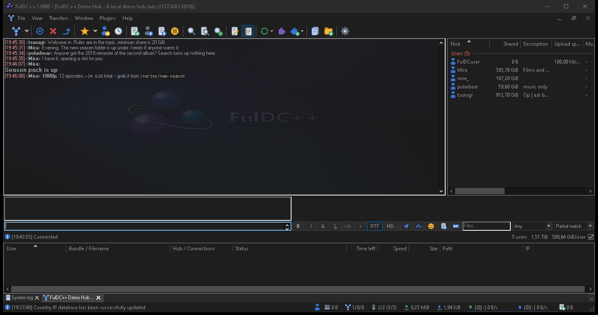

FulDC++ extras
The parts that are not in AirDC++, DC++ or StrongDC++ — which is why they are not documented anywhere else.
Rich text chat
FulDC++ can send formatted messages on ADC hubs that support it. You write in Markdown and everyone with a compatible client sees it rendered: headings, bold and italic, strikethrough, inline code and code blocks, quotes, lists, tables and links.
The RTF button next to the input box toggles rich text for the message you are writing. Ctrl+B, Ctrl+I, Ctrl+K and Ctrl+D apply formatting, and the formatting bar above the input switches from BBCode to Markdown when rich text is on. You can turn on a live preview strip that shows the rendered result as you type.
Rich text is only ever sent where it will be understood — the hub has to advertise support, and for private messages the other client has to as well. Everywhere else your message goes out as ordinary text, so nobody sees a screenful of asterisks.

The Markdown editor
For anything longer than a line, the MD button or /editor (also
/md) opens a proper editor window: formatting buttons, a live preview pane, and
Attach file and Inline media buttons that accept dropped files.
Use in chat sends the result.
Attachments and temporary shares
Drag a file into a chat, or use the magnet button, and FulDC++ shares that one file to that one conversation and inserts a named link. Pictures render inline. This is a temporary share: it is not added to your real share, and it is visible only to the people in that chat.
Settings → Advanced → Rich text & attachments holds the limits — maximum message size, inline media size, count and resolution — and a live list of your active temporary shares with Remove and Remove all.
GIF search
The GIF button, or /gif, opens a searchable GIF picker: trending on open, search as
you type, paging, and Enter to insert. It needs a free API key of your own, which
FulDC++ walks you through obtaining; until you enter one the feature stays off.
Chat background image
A picture behind the chat text, at a blend strength you choose. Set it globally in Settings → Appearance → AirAppearance — image, placement (top-left, centred, stretched or tiled) and blend — or override it per hub in that hub's favourite properties. FulDC++ ships with one and has it on by default.
Chat automation
Chat triggers
Settings → Advanced → Chat triggers. Match a keyword or a regular expression in chat and act on it, with capture groups you can use in the response, an away-only mode, per-hub scoping, statistics on how often each trigger fires, and import/export so you can share a rule set.
Message filter
Settings → Advanced → Message filter drops messages matching a pattern before you ever see them.
Highlight rules
Settings → Appearance → Highlight colours or flags lines that match, so your nick or a release you are waiting for stands out.
The browser tab
View → Web browser opens a real browser inside FulDC++, built on WebView2. It has an address bar, navigation buttons, bookmarks with folders, history and a status bar. Downloads it starts go through the client's own download settings, and hub or magnet links it encounters are handed back to FulDC++ rather than to Windows.
Chat links get an Open in internal browser option, which is handy for hub websites and release pages you would rather not open in your main browser.
Dark mode
A genuine dark theme, not a tint: title bars, menus, scrollbars, lists, trees, dialogs and chat. It is independent of the Windows theme, so FulDC++ can be dark while the rest of your desktop is not. Settings → Appearance → Dark theme has 52 presets and a custom palette editor, and switching applies live without a restart.
Staying alive
Auto-recovery
A watchdog notices if FulDC++ crashes or stops responding and restarts it, with a hang timeout, a cooldown and a cap on restarts per hour so it cannot loop. Configured in Settings → Advanced → Auto-Recovery.
Startup recovery
After an unclean shutdown or a detected corruption, FulDC++ offers to repair the hash database, restore a backup, or start normally — before it touches any of your data.
Crash reporting
Optional, and off unless you enable it. A crash produces a report you can choose to send; you control whether the system log is included and how much of it. Same settings page.
Configuration backup
Settings → Advanced → Backup takes scheduled encrypted backups of your settings, favourites and queue, keeping as many as you tell it to. File → Create backup now does one immediately.
Media
Streaming and casting
Play a file from someone's share without downloading it first, and Cast to a DLNA device on your network — a TV, a console, a media player — from the right-click menu. View → Streaming monitors active streams, one row each, with buffered progress, Stop, Copy URL and Relaunch.
Media player integration
The optional media toolbar controls Winamp, iTunes, Media Player Classic, Windows Media Player, Spotify or foobar2000, and can post what you are playing into chat.
Plugins and extensions
FulDC++ supports two different things with similar names.
Native plugins
Compiled DC++ plugins (.dcext) using the standard plugin API.
Settings → Advanced → Plugins lists what you have installed,
and Get plugins… opens an in-client catalogue served from a signed list,
with each download pinned to a hash so a swapped file is refused.
Web extensions
Node.js extensions running on the web API — release checkers, share tools, chat bots.
View → Extensions browses the FulDC++ catalogue, installs from a
URL or from a .tgz file you drag onto the window, and renders each extension's own
settings. See Remote & web UI.
Smaller things worth knowing
- HTTP transfers in the transfer list — update checks, hub lists, GeoIP and RSS fetches show up as rows like any other transfer, instead of happening invisibly.
- Online identities — publish your accounts on other services, and see other users' in a user list column.
- Distributed favourites — share a favourite hub with another user, and ask connected users for hub recommendations from the Public Hubs window.
- Share profiles on NMDC — profiles work on older hubs, not just ADC.
- IPv6 on NMDC — including the IP64 extension.
- Search spy detail — seeker, IP, hub, result count, search terms and filters, with pause and column selection.
- Toolbar shortcuts — put buttons for your own programs on the toolbar.
- 18 bundled translations, selectable in Settings → General.
- Runs beside AirDC++ — separate profile folders and a one-time import, so you can try it without giving anything up.